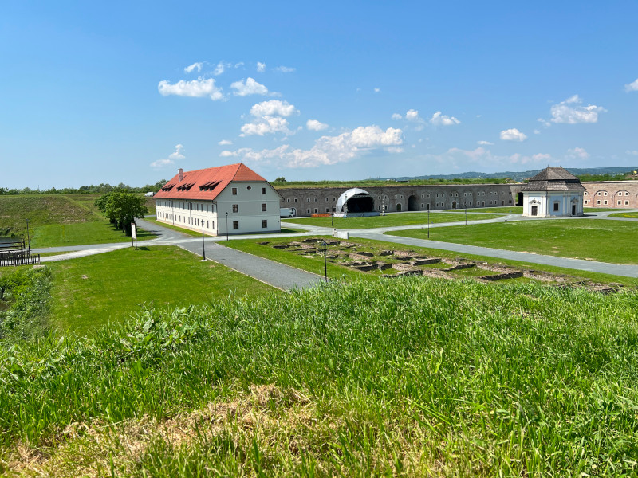
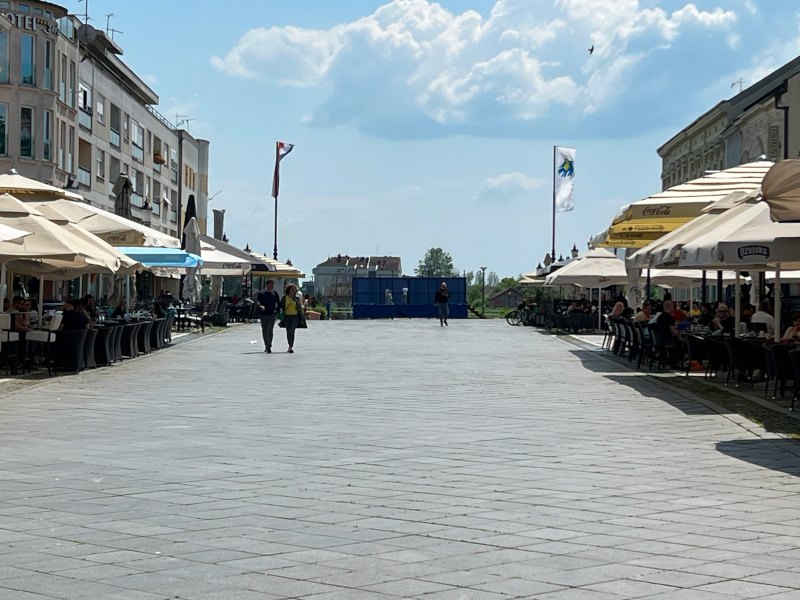

Tvrđava
Tvrđava Slavonski Brod je povijesni utvrđeni kompleks smješten na desnoj obali rijeke Save u Slavonskom Brodu,... Saznaj više

Korzo
Korzo Slavonski Brod je slikovita šetališna zona u samom središtu grada, prepuna trgovina...
Saznaj više
Industrijski park
Nalazi se u kontaktnoj zoni tvrđave Brod, u Ulici Hanibala Lucića. U parku su....
Saznaj više